Welcome
Hello, I’m Suleiman.
I model how frozen ground thaws, and what that does to the things we build on it.
- Permafrost
- Geothermal
- Seismic
- Simulation

PhDConcordia University, Montréal
M.Eng.Democritus University of Thrace
3projects
3conference papers
“Verification, judgement and responsibility remain with the engineer.”
On working with AI tools, from my own profile
Explore
01
About
Who I am, awards, community and the professional bodies I belong to.
02Research
Frozen ground, geothermal energy and seismic soil response, plus the tools I use.
03Projects
Three projects, from permafrost modelling to stone-column design.
04Publications
Conference papers, a thesis and a manuscript.
05Resources
Machine-learning notes: Git, graph neural networks and model predictive control.
06Experience
Research, fieldwork and teaching, from Athens to Montréal.
07Contact
Collaborate, ask a question, or just say hi.